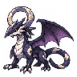

No.143
リンゲツ
晶 希少
月の輪に似た角で白夜の光を集める。ゆっくり振る尾の先から星砂がこぼれる。
基本データ
| 図鑑番号 | No.143 |
|---|---|
| タイプ | 晶タイプ |
| 進化 | 進化しない |
| 入手方法 | 白夜島（Lv.26〜29）の草むらに出現。 |
Lv.50の能力値
| 体力 | 284 | |
|---|---|---|
| 物理攻撃 | 167 | |
| 物理防御 | 114 | |
| 特殊攻撃 | 168 | |
| 特殊防御 | 116 | |
| 素早さ | 119 | |
| 命中 | 99 | |
| 回避 | 96 |
上の数値は、振り分けポイントと持ち物の補正を含まないLv.50の基礎能力です。冒険中の能力値はレベルに応じて上がります。通信対戦は基礎能力をLv.50にそろえ、選んだ個体の振り分けポイントはすべて加算します。
覚える技
| 技 | タイプ | 分類 | 威力 | 命中 | PP | 効果 |
|---|---|---|---|---|---|---|
| 天星の交響 | 晶 | 特殊 | 44 | 90 | 10 | 晶の力を解き放つ強力な特殊攻撃。6%で結晶化にすることがある。 |
| 月鏡の和声 | 晶 | 物理 | 33 | 96 | 15 | 晶の力を込めた物理攻撃。威力と命中のバランスがよい。6%で結晶化にすることがある。 |
| 翠の輪舞 | 芽 | 特殊 | 34 | 96 | 15 | 芽の力を込めた特殊攻撃。威力と命中のバランスがよい。10%で花毒にすることがある。 |
| 星環の終曲 | 晶 | 特殊 | 52 | 80 | 10 | 晶の力をすべて注ぐ特殊攻撃。威力は最大級だが、命中がやや低い。6%で結晶化にすることがある。 |
タイプ相性
晶タイプの技は風タイプに強く（1.5倍）、風タイプの技を受けると効果が大きくなります。同じタイプの技を使うと威力が1.15倍になります。